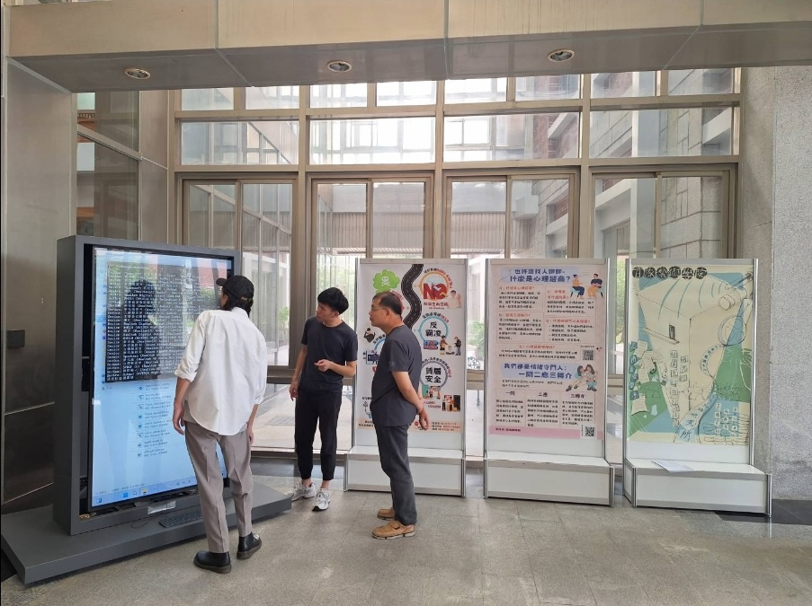
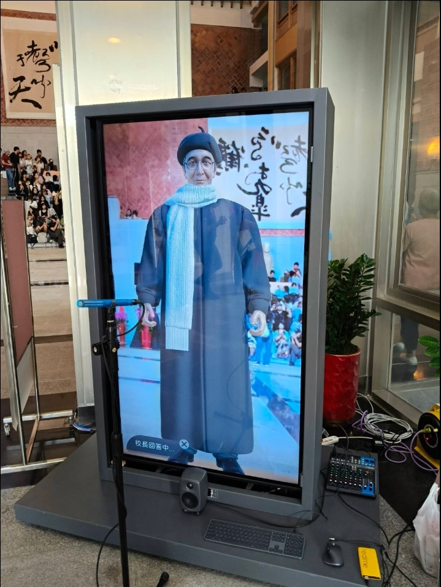
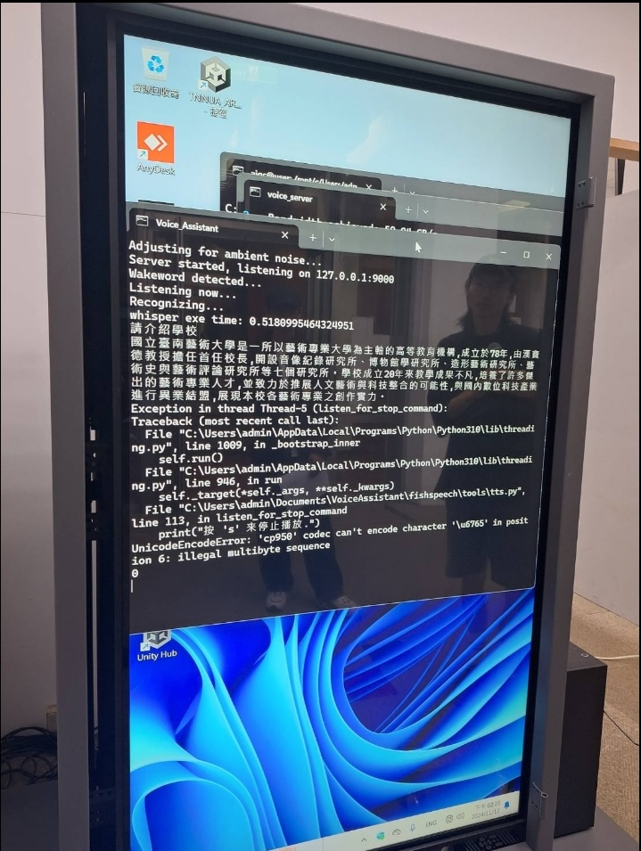

Integrated an end-to-end multimodal AI pipeline (Speech-to-Text, local LLM with RAG, and Text-to-Speech) into Unity, engineering real-time conversational visual feedback on a single local GPU.
Context and Problem
For university academic showcases and VIP receptions, we deployed an interactive 3D virtual avatar powered by local multimodal AI models. Because the deployment required full privacy and offline reliability, cloud APIs were excluded. All inference ran locally on a single GPU workstation.
Executing the full multi-model chain on a single 24GB workstation GPU (Whisper medium STT, bge-m3 RAG retrieval, local LLM generation, and Fish-Speech neural TTS synthesis) required 3 to 5 seconds of cumulative compute time per conversational turn before audio streaming began. In live trials, if the avatar remained motionless during this processing window, users assumed the system was frozen, causing turn-taking overlap and interrupted dialogues.
Design Exploration and Discarded Iterations
Bridging this edge GPU inference window required evaluating several technical alternatives:
External cloud APIs risked campus firewall disruptions and violated strict offline data privacy benchmarks required for university VIP deployments.

Playing repetitive spoken fillers like "Let me think about that" sounded artificial, broke user conversational rhythm, and clashed with spoken answers.
Connected millisecond audio energy threshold detectors directly to Unity blendshapes, shifting the avatar into attentive listening and subtle nodding micro-gestures the moment human speech concluded.

Deployment Setup and On-Site Debugging
Deploying the offline avatar in the open university reception lobby required rapid on-site calibration of physical acoustics, camera angles, and workstation inference telemetry before showcase attendees arrived.

Configuring the terminal workstation and directional audio hardware in the lobby before showcase opening.

Live demo kiosk featuring the directional microphone, camera head tracking, and dedicated audio mixer.

Terminal inspection monitoring live Whisper ASR transcriptions, RAG retrieval context, and TTS error traces.
Pipeline Engineering Challenges
Beyond the perceived latency problem, every stage of the inference pipeline required independent investigation and tuning. The system chained six sequential processes, each introducing its own accuracy and latency trade-offs.
Microphone Audio Input Quality
The kiosk deployed in an open university lobby with ambient crowd noise and echo from marble surfaces. Microphone placement, gain staging, and noise floor directly affected downstream ASR accuracy. We tested different microphone positions and pickup patterns to maximize signal-to-noise ratio at the kiosk.
ASR Model Selection and Speech Cutoff Timing
We evaluated multiple ASR models for Mandarin accuracy on consumer-grade audio input. The final choice was Whisper medium, balancing transcription quality against inference speed on local GPU. A critical sub-problem was speech endpoint detection: when to cut off the audio stream and send the transcript forward. If the cutoff triggered too early, the sentence was incomplete and the LLM received a fragment. If it waited too long, it added unnecessary latency to every turn. We tuned the energy threshold and silence duration to find the minimum reliable pause.
RAG Retrieval and Similarity Threshold Tuning
Teachers from different departments provided question-and-answer pairs as the knowledge base. I worked with the engineering team from Taipei to build the RAG system using RAGFlow with the bge-m3 vector embedding model. We tested the cosine similarity filter threshold extensively. The sweet spot was 0.6: setting the threshold too low increased hallucination because irrelevant passages passed through to the LLM context. Setting it too high filtered out genuinely useful content and returned no matches, leaving the LLM without grounding.
Per-Step Latency Profiling
To reduce end-to-end latency, we profiled every stage independently: microphone input to Whisper ASR, ASR output to the bge-m3 embedding model, vector search and reranking, LLM generation, and Fish-Speech TTS synthesis. Each stage had its own compute cost and queuing overhead. Reducing total turn time required identifying which stages dominated the budget and whether any could overlap or stream.
Traditional Chinese Rendering
The deployment workstation ran Windows with Traditional Chinese locale (cp950/Big5). Third-party model outputs and library strings sometimes contained Simplified Chinese characters that could not be encoded by the system console, causing crashes in the TTS module. We traced each encoding error to its source and ensured all user-facing text rendered in Traditional Chinese.
Systems Integration and Interaction Feedback
I engineered the systems integration bridge in Unity to handle the inference gap without additional hardware:
Conversational State Feedback
Integrated real-time audio energy detectors that identified the exact millisecond user speech finished. The avatar immediately transitioned into attentive listening and nodding micro-gestures, giving users instant visual confirmation that their query was being processed.
Sentiment-Driven Facial Blendshapes
Connected backend LLM sentiment metadata to facial blendshapes in Unity, allowing the avatar to adopt appropriate emotional expressions as speech audio began streaming.
Camera Head Tracking
Implemented vision-based head tracking to maintain continuous, natural eye contact as visitors moved physically in front of the display.
Packet Synchronization
Aligned audio chunk and viseme packet sequencing between local Python inference processes and the Unity C# rendering engine, eliminating lip-sync drift during multi-turn interactions.
Technical Stack
The offline multimodal interactive avatar operated on a single local GPU workstation with end-to-end hardware-software coordination:
Whisper medium
Local Whisper ASR model calibrated with custom energy thresholds and silence windows to balance transcription accuracy in reverberant acoustic environments against GPU inference speed.
RAGFlow with bge-m3
Institutional knowledge base chunked and indexed via bge-m3 embeddings, running cosine similarity vector matching with an empirical 0.6 threshold to prevent hallucinations.
Llama 3 8B with Ollama
On-device Llama 3 8B model served via Ollama, generating contextual responses to visitor queries without external cloud API dependencies or recurring operational bandwidth costs.
Fish-Speech TTS
High-fidelity voice synthesis generating natural Chinese audio payloads coupled with phoneme-level timing visemes.
Unity C# 3D Avatar
3D avatar rendering engine with camera-based head tracking, facial blendshape synchronization, and an event-driven state machine driving instant listening and nodding gestures.
Dedicated 24GB GPU & Locale Pipeline
Windows workstation with a dedicated 24GB GPU, configured with Python string encoding filters to prevent cp950 Big5 character set crashes.
Practical Outcomes and Verification
Visitors conducted multi-turn voice conversations smoothly on the existing local GPU setup with zero cloud dependencies. Real-time conversational state feedback maintained natural turn-taking throughout interactions.
By pairing pipeline latency profiling with real-time behavioral interaction design, the project proved that complex local AI pipelines can deliver fluid, responsive user experiences on constrained workstation hardware.
Perceived latency in multimodal systems is an interaction design problem as much as a compute bottleneck. When users finished speaking and met dead silence, they assumed the system crashed within two seconds.
Providing immediate conversational state indicators such as attentive listening blendshapes and nodding micro-gestures preserved conversational continuity during edge GPU inference turns without relying on external cloud infrastructure.